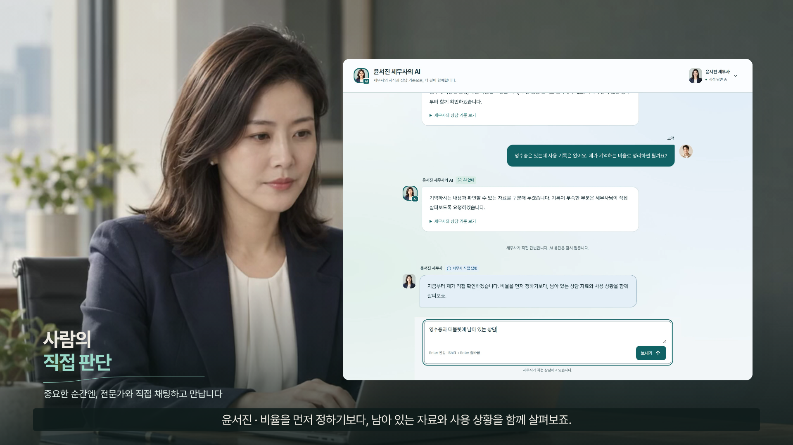

우리는 전문가의
미래 역할에 대한
청사진을 그립니다.
전문가의 판단이, 자신의 AI를 키우는 미래.
직접 수행하는 전문가에서,
기준을 세우고 판단하는 전문가로.
매 상담을 직접 준비합니다.
자료를 찾고, 사실을 확인하고,
같은 설명을 반복합니다.
경험은 사람에게 쌓이지만,
매번 자신의 시간을 써야 합니다.
자신의 AI를 키웁니다.
AI가 근거와 상담 맥락을 준비하고,
전문가는 기준을 세우고 감독합니다.
복잡한 판단과 고객 관계에 집중하며,
그 경험을 다음 상담에 남깁니다.
이 역할의 변화가 실제로 어떤 경험인지 보여드리겠습니다.
전문가의 판단이 자신의 AI에 남는 순간

한 사람의 판단이
다음 상담의 역량으로.
상담 → 가르치기 → 전문성의 확장
가상 인물·프로토타입 시연 · 공동 모델 개선과 보상은 미래 비전
한 번의 판단이,
다음 상담의 역량으로 남습니다.
상황을 보는 판단
이유 · 조건 · 예외
전문성의 축적
전문가별 지식 공간
도움의 확장
상담 준비 · 전문가 연결
우리가 설계한 것은 전문가가 일할수록
자신의 AI도 함께 성장하는 구조입니다.
전문 상담의 어려움을,
역할을 나눈 AI 구조로 해결합니다.
그럴듯한 조문·수치
조문은 DB에서 선택하고 원문과 대조합니다.
구현된 계산·판정은 결정론적 코드가 맡습니다.
상황마다 다른 판단
질문의 성격에 따라 법령 검색·사례 검색·계산 도구를 선택합니다.
개인 판단이 필요한 맥락은 전문가에게 이어집니다.
상담 뒤 사라지는 경험
이유·조건·예외를 개인 RAG에 축적합니다.
공용 공유는 별도 동의와 승인 절차를 거칩니다.
Upstage Solar · Embedding 기반 · 국내 AI API 19,722회 사용 보고 (10/12–19)
가능성을 말하는 데서,
운영 결과를 확인하는 단계로.
출처 표시 답변
출처 배지 표시 비율
정답률을 뜻하지 않습니다.
법령 경로 응답 시간
중앙값 p50 · p90 14.8초
10/19 운영 810턴 합산
세무사 정확성 평가
현직 세무사 4문항
표본·평가자 확대가 필요합니다.
최종보고서 보고값 · 기준선 10/10, 최종 10/19 · 이번 발표 제작에서 독립 재측정하지 않음
나의 지식과,
함께 쓸 지식은 구분합니다.
나의 전문성을 축적
상담 경험과 원칙을
개인 지식 공간에 저장합니다.
공동의 기반을 강화
검토된 지식에 기여자와
활성 존속기간을 기록합니다.
개인 지식의 축적과 공용 기여는 별도의 선택입니다.
우리가 증명하려는 경쟁력은
전문가가 계속 참여할 이유입니다.
나의 판단 → 나의 AI 역량
선택한 공유 → 기록되는 기여
기술의 완성도
근거 확인·도구 실행·사람의 판단을 하나의 상담 흐름으로
참여의 지속성
자신의 AI를 육성하고, 공유 여부와 범위를 선택
서비스의 성장
개인의 전문성 축적이 공동 기반의 개선으로 연결
차별화 가설 · 실제 전문가의 반복 사용과 기여 지속률로 검증할 과제
먼저, 자신의 이름으로
상담 창구를 만들 전문가에게.
첫 고객
개업 초기의
소규모 세무사 사무소
반복 문의와 상담 준비를 돕고,
새로운 고객 접점을 만듭니다.
이용자
근거를 확인할 수 있는 무료 상담과 전문가 연결
전문가
개인 AI 상담사 구독 + 사용량 기반 요금 검토
파일럿의 질문
준비 시간이 줄었는가? 가르친 지식이 활용되는가?
고객과 전문가의 연결이 이어지는가?
사업화 계획 · 요금과 효과는 파일럿으로 검증 · 연결·수임 건당 과금은 하지 않는 방향
2027 상반기 목표 · 세무사 사무소 10–30곳 파일럿
지금의 구현과
다음 검증 과제를 분명히 합니다.
운영 구현으로 보고
근거 기반 상담 · 근로소득세 계산 · 전문가 연결과 3자 상담방
개인 RAG 가르치기 · 승인 후 공용 반영 · 기여 원장
영상으로 보여준 경험
전문가 판단 → 지식 정리 → 다음 상담 적용
가상 인물과 로컬 상태를 사용하는 편집 시연
앞으로 검증할 것
다수 전문가 온보딩 · 평가 범위 확대 · 실제 업무 효과
기여 보상 정책 · 인접 분야 적용 · 공동 전문 AI의 발전
서로 다른 경험을,
하나의 서비스로 모았습니다.
최유진
팀장 · 디자인 / 기획
정중은
엔지니어 / 데이터 사이언티스트
임철호
사업 / 운영
16년 전 기숙사에서 만난 세 친구.
사람의 전문성과 AI를 잇는 플랫폼을 만듭니다.
진효근 세무사
엑스퍼트 어드바이저 · 세무 도메인 자문
AI와 함께 일하고,
사람을 위해
판단하는 전문가.
전문가가 성장시키고, 전문가와 함께 성장하는 AI.
CrediGraph가 그 청사진을 구현합니다.
부록 · 측정 결과의 해석 범위
| 보고값 | 측정 조건 | 해석의 한계 |
|---|---|---|
| 출처 표시 93.3% | 10/19 운영 측정, 회차별 92.6–94.4% | 근거의 타당성·정답률과 구분 |
| DB 밖 조문 인용 0건 | 인용 조문을 현행 DB와 대조 | 모든 환각이 없다는 의미 아님 |
| 정확성 4.0/5 | 현직 세무사 4문항, 3차 평가 | 평가자·문항 확대 필요 |
| p50 9.1초 / p90 14.8초 | 법령 경로, 810턴 합산 | 전체 경로·기기의 지연 보장 아님 |
| 계산 완결 100% | 소득세 시나리오, 2턴 내 계산 도달 | 모든 세목 계산 정확도 아님 |
모두 최종보고서 인용. 원시 로그 재분석·독립 재현은 이번 제작 범위에 포함하지 않았습니다.
부록 · 연구와 다음 단계
연구 성과
ICTC 2026 논문 채택·발표 보고
Expert-in-the-Loop Knowledge Base Construction
특허 출원
활성 존속기간 기반 RAG 기여도 산출
10-2026-0139453 · 등록과 구분
2027 상반기 계획
세무사 파일럿 10–30곳
구매 가치와 원가 검증
후속 확장 계획
조직형 구독 · 플랫폼 API · 기관 실증
전문가 평가·국내 모델 비교 확대
성과는 보고서 기재 내용. 파일럿·과금·기관 협력은 계획이며 확정 계약을 뜻하지 않습니다.